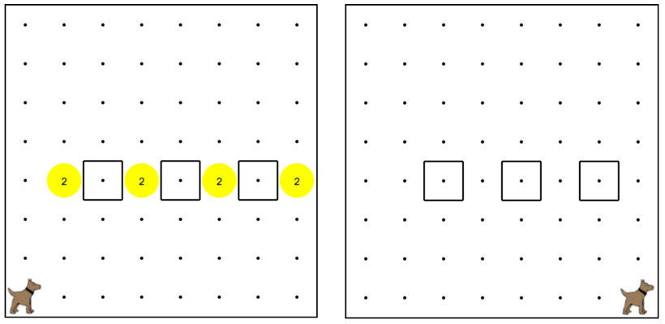

Karel is now Mario, and needs to go across the world and collect some coins!
卡雷爾現在是馬里奧，並且需要去世界各地，並收集一些硬幣！
Karel should move across the world, then jump up and collect the coins,
and come back down--and then continue to move across.
卡雷爾應該把世界各地的，然後跳起來和收集硬幣，然後回來下來 - 然後繼續行駛著。
Create a function called collectCoins() to to help karel solve this problem.
The world should end up exactly as shown here.
創建一個名為收集硬幣（）的函數，以幫助卡雷爾解決這個問題。世界應該結束了完全相同，如下所示。

move(); 移動();
turnLeft(); 左轉();
putBall(); 放球();
takeBall(); 拿球();
// "Defining the function" 定義函數
function turnRight() { 功能右轉（）{
turnLeft(); 左轉();
turnLeft(); 左轉();
turnLeft(); 左轉();
}
// "Calling a function" 調用函數”
turnRight(); 右轉（）;
turnAround(); 轉身（）;
// "Defining a function" “定義的函數”
function turnAround(){ 功能掉頭（）{
turnLeft(); 左轉();
turnLeft(); 左轉();
}
// "Defining a function" “定義的函數”
function moveTwice(){ 功能移動兩次（）{
move(); 移動();
move(); 移動();
}
// "Calling a function" 調用函數”
turnRight(); 右轉（）;
turnAround(); 轉身（）;